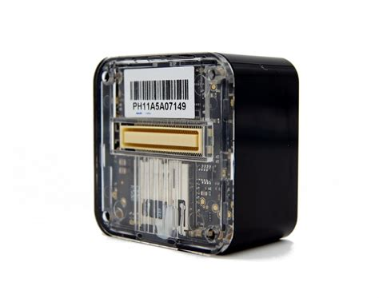
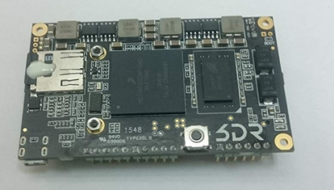
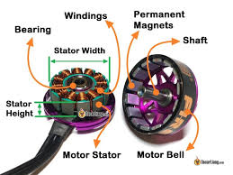
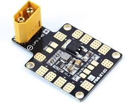

PRESENTATION60 minutes
Day 1 – UAV & Drone
Hack Our Drone Workshop — Dark Wolf Solutions
A UAS is not a single device — it is a system of systems.
| ID | Subsystem Name | ID | Subsystem Name |
|---|---|---|---|
| 1 | Flight Computer | 6 | RC Receiver |
| 2 | Companion Computer | 7 | IMU (Inertial Measurement Unit) |
| 3 | Motors & ESC | 8 | GPS/GNSS Receiver |
| 4 | Power Distribution Board | 9 | ADS-B Receiver/Transmitter |
| 5 | Telemetry Radios | 10 | Camera / Gimbal |
The flight controller (FC) is the brain of the drone. It stabilizes the aircraft, interprets RC commands, executes missions, and communicates with the GCS.

| Firmware | Description |
|---|---|
| ArduPilot | Open source, broad hardware support, large community |
| PX4 | Open source, professional/commercial focus |
| DJI Naza | Proprietary, DJI drones |
| Betaflight | Open source, racing and freestyle FPV |
Hardware platforms: Pixhawk, Cube Orange, Holybro, MatekSys, SpeedyBee
OS: RTOS (NuttX for PX4/ArduPilot on bare metal) or Linux (ArduPilot on Linux)
Parameters stored in EEPROM — readable/writable via MAVLink with no authentication
Serial console often accessible via UART with root-equivalent access
No secure boot on most commercial flight controllers
Firmware update via USB with no signature verification
Many advanced drones pair the flight controller with a companion computer for higher-level processing.

3DR Solo: Freescale iMX6 (ARM Cortex-A9), runs Linux Yocto
DJI Manifold: NVIDIA Jetson
Generic: Raspberry Pi, NVIDIA Jetson Nano, Intel NUC
Payload processing (computer vision, object tracking)
Advanced mission logic
Telemetry forwarding between flight controller and GCS
Running companion apps and scripts
Full Linux environment — all Linux attack surface applies
Often has SSH enabled with weak or default credentials
WiFi access point hosted by companion computer
Accessible from GCS network
Brushless DC (BLDC) motors are standard for consumer and commercial drones.

Converts DC power to 3-phase AC for the BLDC motor
Receives PWM or DSHOT signal from flight controller
Can be programmed via BLHeliSuite over USB or signal wire
BLHeli32 supports firmware updates over the air via the flight controller
ESC firmware can be modified to alter motor behavior
BLHeli passthrough allows reprogramming ESCs through the flight controller
DoS: corrupted ESC signal causes motor failure in flight
PDB (Power Distribution Board):
Routes battery power to motors, ESC, and other components
Some PDBs include a built-in voltage regulator
BEC (Battery Eliminator Circuit):
Steps down battery voltage (11.1V / 14.8V) to regulated 5V or 12V
Powers flight controller, servos, and accessories

Physical: access to power rails allows hardware implant
Shared power bus means a shorted component can affect all subsystems
SiK Radios (RFDesign, HolyBro, 3DR):
433 MHz (EU/Asia) or 915 MHz (USA)
250 mW typical output
Bidirectional: carries MAVLink from drone to GCS
Parameters: NET ID, AIR SPEED, DUTY CYCLE, ECC
AES-128 encryption available but rarely configured
Default NET ID (25) means any SiK radio can receive traffic
Passive capture with HackRF or RTL-SDR
Replay of captured MAVLink frames
RC protocols:
| Protocol | Description |
|---|---|
| PWM | One wire per channel, no feedback, analog |
| PPM | All channels on one wire, sequential pulses |
| SBUS | Frsky/Futaba serial protocol, inverted UART |
| DSM2/DSMX | Spektrum 2.4 GHz spread spectrum |
| CRSF | ExpressLRS/TBS Crossfire, bidirectional, encrypted |
Older protocols (PWM, PPM, SBUS) have no authentication or encryption
DSM2 vulnerable to replay attack: capture bind sequence, replay to take over
DSMX: harder but still documented vulnerabilities
RC jamming forces failsafe behavior (RTL, land, or hover)
Sensors that measure the drone's physical state:
Accelerometers – measure linear acceleration (3 axes)
Gyroscopes – measure angular velocity (3 axes)
Magnetometer/Compass – measure magnetic heading (3 axes)
Barometer – measure altitude by air pressure
Common IMU chips: ICM-42688-P, ICM-20689, MPU-6000, MS5611
Sensor spoofing: acoustic injection (laser or sound waves at resonant frequency)
Magnetic spoofing: external magnetic field corrupts heading
Barometric spoofing: localized pressure changes (rare but demonstrated)
Provides absolute position (latitude, longitude, altitude) and time.
Satellite constellations:
GPS (US) – L1: 1575.42 MHz
GLONASS (Russia)
BeiDou (China)
Galileo (EU)
Common receivers:
u-blox NEO-7N (3DR Solo)
u-blox M8/M9/F9 series
GPS signals are unencrypted and unauthenticated — anyone can spoof them
GPS spoofing demonstrated against DJI, commercial, and military drones
Inertial navigation (dead reckoning) as fallback is limited
Automatic Dependent Surveillance-Broadcast (ADS-B):
1090 MHz
Broadcasts: ICAO address, position, altitude, velocity, callsign
Standard in manned aviation; increasingly required for UAV
ADS-B In (receive only): drone listens for nearby aircraft, avoids collision ADS-B Out (transmit): drone broadcasts its own position
ADS-B is unauthenticated — trivially spoofable
False aircraft injection causes GCS/autopilot alerts
Suppression of own signal causes detection gap
Camera types:
GoPro (WiFi-enabled, HTTP API)
DJI integrated cameras
Thermal / multispectral sensors
FPV cameras (analog or digital)
Gimbal:
2-axis or 3-axis stabilization
Controlled via MAVLink or dedicated serial protocol
Some support pan/tilt from GCS
GoPro WiFi exposes HTTP API (port 80) — no authentication on older models
Analog video downlink is unencrypted and eavesdroppable
Digital video streams (RTP/RTSP) often unencrypted on local WiFi
| Component | Key Vulnerabilities |
|---|---|
| Flight controller | UART shell, unsigned firmware, unauthenticated MAVLink |
| Companion computer | SSH default creds, open ports, no hardening |
| RC receiver | No encryption (PWM/PPM/SBUS), DSM2 replay |
| Telemetry radio | Unencrypted by default, global NET ID |
| GPS | Spoofable — unencrypted satellite signals |
| GoPro / camera | Unauthenticated HTTP API, unencrypted video |
| ESC | BLHeli passthrough, firmware modification |